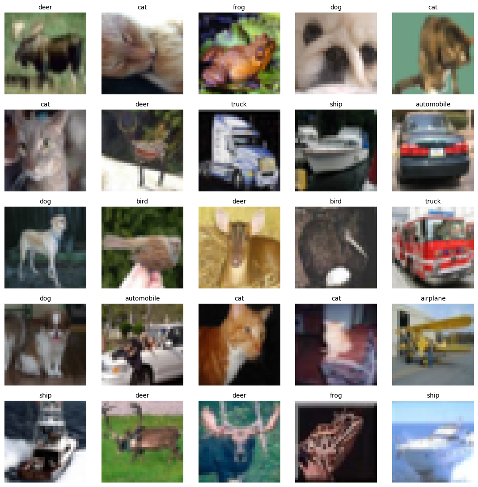

MLDL 딥러닝 분류 - 사례분석 이미지 분류
딥러닝 분류 사례분석 (이미지 분류)
1. 데이터
메타 데이터 및 데이터 분할
본 실습에서는 TensorFlow/Keras에서 제공하는 내장 데이터셋인 CIFAR-10을 사용한다. CIFAR-10은 32×32 크기의 RGB 컬러 이미지로 구성된 10개 클래스 분류 문제이며, 각 이미지는 (높이 32, 너비 32, 채널 3)의 형태를 가진다(NHWC 포맷).
코드에서 keras.datasets.cifar10.load_data()를 통해 학습용 데이터 50,000장과 테스트 데이터 10,000장을 로드하였다. 로드 직후 입력 데이터는 x_train_raw의 크기가 (50000, 32, 32, 3), x_test_raw의 크기가 (10000, 32, 32, 3)이며, 자료형(dtype)은 uint8이다. 이는 각 픽셀이 0~255 범위의 정수 값(원시 이미지 값)으로 저장되어 있음을 의미한다.
정답 레이블은 y_train, y_test로 제공되며, 원래 (N, 1) 형태로 로드되기 때문에 reshape(-1)을 적용해 (N,) 형태의 1차원 벡터로 변환하였다. 변환 이후 y_train의 크기는 (50000,), y_test의 크기는 (10000,)이며, 레이블 값은 0부터 9까지의 정수로 구성된다. 각 정수 레이블은 class_names 리스트에 따라 0=airplane, 1=automobile, 2=bird, 3=cat, 4=deer, 5=dog, 6=frog, 7=horse, 8=ship, 9=truck에 대응한다.
# =========================
# (1) 데이터 불러오기
# =========================
import numpy as np
import tensorflow as tf
from tensorflow import keras
# 재현성
SEED = 42
tf.keras.backend.clear_session()
np.random.seed(SEED)
tf.random.set_seed(SEED)
# CIFAR-10 로드
(x_train_raw, y_train), (x_test_raw, y_test) = keras.datasets.cifar10.load_data()
y_train = y_train.reshape(-1)
y_test = y_test.reshape(-1)
class_names = ["airplane","automobile","bird","cat","deer","dog","frog","horse","ship","truck"]
print("Train raw:", x_train_raw.shape, y_train.shape, x_train_raw.dtype)
print("Test raw:", x_test_raw.shape, y_test.shape, x_test_raw.dtype)
print("Labels:", np.unique(y_train))Train raw: (50000, 32, 32, 3) (50000,) uint8
Test raw: (10000, 32, 32, 3) (10000,) uint8
Labels: [0 1 2 3 4 5 6 7 8 9]원본 이미지 보기(optional)
import numpy as np
import matplotlib.pyplot as plt
import tensorflow as tf
from tensorflow import keras
# 1) CIFAR-10 로드
(x_train, y_train), (x_test, y_test) = keras.datasets.cifar10.load_data()
y_train = y_train.reshape(-1)
y_test = y_test.reshape(-1)
class_names = ["airplane","automobile","bird","cat","deer","dog","frog","horse","ship","truck"]
# 2) 원본(0~255, uint8) 보존
x_train_raw = x_train.copy()
x_test_raw = x_test.copy()
# (선택) 이후 학습용 정규화는 별도로 수행
x_train = x_train.astype("float32") / 255.0
x_test = x_test.astype("float32") / 255.0
def show_grid_original(X_raw, y, n=25, seed=1, scale=6):
rng = np.random.default_rng(seed)
idx = rng.choice(len(X_raw), size=n, replace=False)
ncols = int(np.ceil(np.sqrt(n)))
nrows = int(np.ceil(n / ncols))
# scale을 키울수록 크게 보이지만 픽셀은 그대로(희미해지지 않음)
fig, axes = plt.subplots(nrows, ncols, figsize=(ncols*scale, nrows*scale))
axes = np.array(axes).reshape(-1)
for ax, i in zip(axes, idx):
ax.imshow(X_raw[i], interpolation="nearest") # 핵심: 보간 끔
ax.set_title(class_names[int(y[i])], fontsize=10)
ax.axis("off")
# 남는 칸 지우기
for ax in axes[len(idx):]:
ax.axis("off")
plt.tight_layout()
plt.show()
show_grid_original(x_train_raw, y_train, n=25, seed=1, scale=2.2)
전처리: 전처리 (정규화 0~1 + train/valid 분리 + augmentation)
이 코드는 CIFAR-10 이미지 분류 실험을 위해 학습/평가에 사용할 입력 데이터를 전처리하는 단계로, (1) 픽셀값 정규화, (2) 학습/검증 분리, (3) 학습용 데이터 증강 모듈 정의의 세 부분으로 구성된다.
먼저 x_train_raw, x_test_raw는 원본 이미지 배열(자료형 uint8, 픽셀 범위 0~255)로 유지해 두고, 모델 학습에 사용할 x_train, x_test를 새로 만든다. 이때 x_train_raw와 x_test_raw를 float32로 변환한 뒤 255.0으로 나누어 픽셀 값을 0~1 범위로 스케일링한다. 이렇게 정규화를 하면 입력 스케일이 안정화되어 최적화(경사하강) 과정이 수치적으로 더 안정적이고, 학습 속도 및 수렴 특성이 좋아지는 경향이 있다. 코드에 “정규화는 딱 1번만”이라고 주석을 둔 이유는, 이미 0~1로 스케일링된 데이터를 이후 단계에서 다시 나누거나 변환하는 중복 처리가 생기면 입력 분포가 의도와 다르게 바뀌어 성능 저하나 비교 불가능 문제가 발생할 수 있기 때문이다.
다음으로 정규화가 올바르게 되었는지 확인하기 위해 x_train과 x_test의 최소값/최대값을 출력한다. 정상적인 경우 최소값은 0.0, 최대값은 1.0 근처(정확히 1.0까지 가능)가 되어야 하며, 이 출력은 전처리 오류(예: 정규화 누락, 자료형 문제, 잘못된 스케일링)가 없는지 빠르게 점검하는 안전장치 역할을 한다.
그 다음 train_test_split을 사용하여 학습 데이터를 학습용(train_sub)과 검증용(val)으로 8:2 비율로 분리한다. random_state=SEED로 난수 시드를 고정해 매번 동일한 분할이 재현되도록 하고, stratify=y_train 옵션을 사용해 클래스 분포가 학습/검증 세트에서 원본과 유사하게 유지되도록 한다. CIFAR-10은 10개 클래스의 균형 데이터에 가깝지만, 실험 재현성과 공정한 성능 비교를 위해 층화 분리는 기본적으로 좋은 습관이다. 분리 후에는 각 세트의 shape를 출력해 분할이 기대한 크기(예: 40000/10000)로 되었는지 확인한다.
마지막으로 data_augmentation이라는 이름의 keras.Sequential 모듈을 정의한다. 여기에는 (1) 좌우 반전(RandomFlip), (2) 작은 회전(RandomRotation), (3) 약간의 확대/축소(RandomZoom)가 포함되어 있으며, 이는 학습 과정에서 입력 이미지를 확률적으로 변형해 모델이 데이터의 작은 변형에 덜 민감하고 일반화 성능이 좋아지도록 돕는 목적이다. 이 모듈은 정의만 해두면 단독으로는 아무 변화도 일으키지 않으며, 이후 모델 설계 단계에서 입력단에 연결하여 학습 시에만 적용되도록 사용하는 것이 일반적이다. 검증/테스트 데이터에는 증강을 적용하지 않고 원본 분포 그대로 평가해야 모델의 실제 성능을 올바르게 측정할 수 있으므로, “훈련시에만 모델 내부에서 적용”이라는 운영 원칙과 맞물려 설계된다.
요약하면, 이 전처리 코드는 원본 이미지를 0~1 범위로 표준 입력 형태로 변환하고(정규화), 학습 중 성능 모니터링을 위한 검증 세트를 층화 분리로 확보하며, 학습 전용 데이터 증강 모듈을 정의해 일반화 성능 향상을 준비하는 단계이다.
# =========================
# (2) 전처리: 정규화 + train/valid 분리 + 증강
# =========================
from sklearn.model_selection import train_test_split
from tensorflow import keras
# (중요) 정규화는 "딱 1번만"
x_train = x_train_raw.astype("float32") / 255.0
x_test = x_test_raw.astype("float32") / 255.0
# 범위 체크(0~1이어야 정상)
print("Range train:", float(x_train.min()), float(x_train.max()))
print("Range test :", float(x_test.min()), float(x_test.max()))
# train/valid 분리
x_train_sub, x_val, y_train_sub, y_val = train_test_split(
x_train, y_train,
test_size=0.2,
random_state=SEED,
stratify=y_train
)
print("Train sub:", x_train_sub.shape, y_train_sub.shape)
print("Valid :", x_val.shape, y_val.shape)
# 데이터 증강(훈련시에만 모델 내부에서 적용하는 용도)
data_augmentation = keras.Sequential(
[
keras.layers.RandomFlip("horizontal"),
keras.layers.RandomRotation(0.1),
keras.layers.RandomZoom(0.1),
],
name="data_augmentation"
)
data_augmentationRange train: 0.0 1.0
Range test : 0.0 1.0
Train sub: (40000, 32, 32, 3) (40000,)
Valid : (10000, 32, 32, 3) (10000,)2. CNN 모델 학습 및 평가
(1) Baseline CNN
모델 학습
이 코드는 CIFAR-10 이미지 분류를 위한 기본형(Baseline) CNN을 구성하고, 학습용/검증용 데이터로 학습을 수행하는 전체 흐름을 담고 있다. 코드의 목적은 간단한 합성곱 신경망을 기준선 모델로 학습시켜 이후 개선 모델과 성능을 비교할 수 있도록 하는 것이다.
재현성 설정 및 세션 초기화 코드 첫 부분에서는 NumPy와 TensorFlow 관련 모듈을 불러온 뒤, SEED 값을 고정한다. tf.keras.backend.clear_session()으로 기존 그래프/모델 상태를 초기화하고, np.random.seed와 tf.random.set_seed를 통해 난수 생성이 가능한 한 동일하게 나오도록 설정한다. 이렇게 하면 같은 데이터와 같은 코드로 실행했을 때 모델 학습 결과가 크게 흔들리지 않도록 도움을 준다.
전처리/분할 변수 존재 여부 확인(안전장치) 이 코드는 학습에 필요한 x_train_sub, x_val, y_train_sub, y_val 변수가 이미 앞 셀에서 만들어졌다고 가정한다. 다만, 해당 변수가 현재 런타임에 없을 경우를 대비하여 if “x_train_sub” not in globals(): 조건문을 두고 있다. 조건이 참이면, 원본 학습/테스트 이미지(x_train_raw, x_test_raw)를 0~1 범위로 정규화한 뒤(train과 test를 각각 float32로 변환 후 255로 나눔), train_test_split을 이용해 학습용(train_sub)과 검증용(val)을 8:2 비율로 분리한다. 이때 stratify=y_train을 사용하여 클래스 비율이 학습/검증에 유사하게 유지되도록 한다.
Baseline CNN 구조 정의(build_baseline_cnn) build_baseline_cnn 함수는 입력 이미지(32×32×3)를 받아 10개 클래스에 대한 확률(softmax)을 출력하는 CNN 모델을 만든다. 모델의 합성곱 블록은 Conv2D(3×3, same padding, ReLU)와 MaxPooling2D를 반복하는 형태로 구성된다. 구체적으로는 32채널 → 64채널 → 128채널 순으로 특성 맵의 채널 수를 늘리며, 각 단계에서 풀링으로 공간 해상도를 줄여가면서 더 추상적인 특징을 학습한다. 이후 Flatten으로 2차원 특성맵을 1차원 벡터로 펼친 뒤 Dense(128, ReLU)로 분류에 필요한 표현을 만들고, Dropout(0.3)으로 과적합을 완화한다. 마지막 Dense(num_classes, softmax) 층은 10개 클래스에 대한 사후확률(모델이 추정한 클래스 확률)을 출력한다.
컴파일(최적화/손실/평가지표) model.compile 단계에서는 Adam(학습률 1e-3)을 사용하고, 다중분류에 표준적으로 쓰이는 SparseCategoricalCrossentropy 손실을 사용한다. 라벨이 원-핫 인코딩이 아니라 정수 클래스(0~9)이므로 sparse 버전의 손실함수를 선택한 것이다. 평가지표는 accuracy를 사용해 분류 정확도를 모니터링한다.
콜백 설정(ReduceLROnPlateau, EarlyStopping) cb_baseline에는 두 가지 콜백이 들어 있다.
- ReduceLROnPlateau: 검증 정확도(val_accuracy)가 개선되지 않으면 학습률을 factor=0.5만큼 줄여 더 미세한 탐색을 유도한다. patience=2는 2번 연속 개선이 없을 때 학습률을 낮춘다는 의미이며, min_lr=1e-5로 학습률 하한을 둔다.
- EarlyStopping: 검증 정확도 기준으로 성능 향상이 일정 기간 없으면 학습을 조기 종료한다. patience=6은 6 epoch 동안 개선이 없으면 멈춘다는 의미이며, restore_best_weights=True는 가장 성능이 좋았던 시점의 가중치를 마지막에 복원한다.
- 학습 실행(fit) baseline_cnn.fit에서는 학습 데이터(x_train_sub, y_train_sub)로 모델을 학습하고, validation_data=(x_val, y_val)로 매 epoch마다 검증 성능을 계산한다. epochs=30은 최대 반복 횟수이며, 실제로는 EarlyStopping 조건이 먼저 만족되면 30보다 빨리 종료될 수 있다. batch_size=128은 한 번의 업데이트에 사용하는 샘플 묶음 크기이며, 값이 클수록 학습은 빠를 수 있으나 메모리 사용량이 증가한다. 학습 결과는 hist_baseline에 저장되어 epoch별 train/val loss와 accuracy 변화 추이를 이후에 그래프로 확인할 수 있다.
정리하면, 이 Baseline CNN 코드는 (재현성 설정) → (데이터 정규화 및 학습/검증 분할 보장) → (간단한 CNN 모델 설계) → (표준 손실함수/최적화로 컴파일) → (학습률 조정과 조기 종료로 학습 안정화) → (학습 수행)이라는 흐름으로 구성되어 있으며, 개선 모델 대비 비교 기준선을 만들기 위한 목적에 맞게 설계되어 있다.
import numpy as np
import tensorflow as tf
from tensorflow import keras
from tensorflow.keras import layers
SEED = 42
tf.keras.backend.clear_session()
np.random.seed(SEED)
tf.random.set_seed(SEED)
# (안전장치) 전처리/분할 변수가 없으면 여기서 만들어줌
if "x_train_sub" not in globals():
from sklearn.model_selection import train_test_split
x_train = x_train_raw.astype("float32") / 255.0
x_test = x_test_raw.astype("float32") / 255.0
x_train_sub, x_val, y_train_sub, y_val = train_test_split(
x_train, y_train, test_size=0.2, random_state=SEED, stratify=y_train
)
# (Baseline) Conv-ReLU-Pool 중심 + (Flatten) + Softmax
num_classes = 10
input_shape = (32, 32, 3)
def build_baseline_cnn():
inputs = keras.Input(shape=input_shape)
x = inputs
# (선택) 데이터 증강을 Baseline에는 "빼는" 게 비교가 깔끔합니다.
# 만약 넣고 싶으면 아래 2줄 주석 해제하고, data_augmentation 변수가 있어야 합니다.
# if "data_augmentation" in globals():
# x = data_augmentation(x)
x = layers.Conv2D(32, 3, padding="same", activation="relu")(x)
x = layers.MaxPooling2D()(x)
x = layers.Conv2D(64, 3, padding="same", activation="relu")(x)
x = layers.MaxPooling2D()(x)
x = layers.Conv2D(128, 3, padding="same", activation="relu")(x)
x = layers.MaxPooling2D()(x)
x = layers.Flatten()(x)
x = layers.Dense(128, activation="relu")(x)
x = layers.Dropout(0.3)(x)
outputs = layers.Dense(num_classes, activation="softmax")(x)
model = keras.Model(inputs, outputs, name="baseline_cnn")
model.compile(
optimizer=keras.optimizers.Adam(1e-3),
loss=keras.losses.SparseCategoricalCrossentropy(),
metrics=["accuracy"],
)
return model
baseline_cnn = build_baseline_cnn()
baseline_cnn.summary()
cb_baseline = [
keras.callbacks.ReduceLROnPlateau(
monitor="val_accuracy", mode="max",
factor=0.5, patience=2, min_lr=1e-5, verbose=1
),
keras.callbacks.EarlyStopping(
monitor="val_accuracy", mode="max",
patience=6, restore_best_weights=True
),
]
hist_baseline = baseline_cnn.fit(
x_train_sub, y_train_sub,
validation_data=(x_val, y_val),
epochs=30,
batch_size=128,
callbacks=cb_baseline,
verbose=1
)이번 Baseline CNN 모델은 CIFAR-10(32×32×3) 이미지를 입력으로 받아, Conv–ReLU–MaxPool 블록을 3회(채널 32→64→128) 반복한 뒤 Flatten → Dense(128) → Dropout(0.3) → Softmax(10)로 분류하는 구조로 설계되었다. 전체 파라미터 수는 356,810개(약 1.36MB)이며, 모두 학습 가능한(trainable) 파라미터로 구성되어 있다.
학습은 초기 학습률 1e-3(Adam)로 시작되었다. Epoch 1에서는 정확도 0.2787, 검증 정확도 0.5203으로 출발했지만, 초반 몇 epoch 동안 손실이 빠르게 감소하며 성능이 급격히 향상되었다. Epoch 2~6 구간에서 훈련 정확도는 약 0.50 → 0.69로 상승했고, 검증 정확도도 0.59 → 0.71 수준까지 안정적으로 증가하면서 모델이 기본적인 특징(에지/텍스처 등)을 빠르게 학습하는 모습을 보였다.
이후 Epoch 7~10에서는 훈련 정확도는 계속 상승(약 0.72 → 0.77)했지만, 검증 정확도는 0.71~0.718 부근에서 정체되는 양상이 나타났다. 이에 따라 Epoch 11에서 ReduceLROnPlateau가 동작해 학습률이 0.001 → 0.0005로 감소했고, 이는 ‘큰 보폭 학습’에서 ‘미세 조정’ 단계로 전환되었음을 의미한다. 학습률 감소 이후 Epoch 12~14 구간에서 검증 정확도는 다시 개선되어 최고 약 0.7454까지 상승했다.
그러나 Epoch 15 이후부터는 훈련 정확도가 0.84 → 0.90+로 꾸준히 오르는 반면, 검증 정확도는 0.74~0.75대에서 큰 폭으로 개선되지 않고 오히려 미세한 등락을 반복했다. 이 구간에서 검증 손실(val_loss)이 0.78대에서 0.85대로 다소 증가하는 흐름도 보였는데, 이는 학습 데이터에는 더 잘 맞추지만 일반화 성능은 크게 좋아지지 않는, 즉 과적합의 신호로 해석할 수 있다.
검증 정확도의 정체가 반복되면서 학습률은 추가로 여러 차례 감소했다(예: Epoch 16: 0.0005→0.00025, Epoch 19: 0.00025→0.000125, Epoch 23: 0.000125→6.25e-5, Epoch 25: 6.25e-5→3.125e-5, Epoch 28: 3.125e-5→1.5625e-5). 이러한 단계적 학습률 감소는 큰 개선이 나오지 않는 상황에서 파라미터를 더 세밀하게 조정하여 성능을 ‘조금씩’ 끌어올리는 역할을 한다. 최종적으로 Epoch 30에서 훈련 정확도는 0.9080, 검증 정확도는 0.7578을 기록하며 학습이 마무리되었다.
정리하면, 본 학습 과정은 (1) 초반 빠른 수렴으로 기본 성능 확보 → (2) 중반 검증 성능 정체 발생 → (3) 학습률을 단계적으로 낮추며 미세 조정 → (4) 훈련 성능은 계속 상승하지만 검증 성능은 0.75대에서 제한되는 형태로 진행되었다. 따라서 Baseline CNN은 CIFAR-10에서 준수한 성능(검증 약 0.76)을 보였으나, 후반부 과적합 경향을 줄이기 위해서는 데이터 증강 강화, 정규화(BN), L2 규제, GAP 기반 헤드 등 추가 개선이 필요함을 시사한다.
Model: "baseline_cnn"
┏━━━━━━━━━━━━━━━━━━━━━━━━━━━━━━━━━┳━━━━━━━━━━━━━━━━━━━━━━━━┳━━━━━━━━━━━━━━━┓
┃ Layer (type) ┃ Output Shape ┃ Param # ┃
┡━━━━━━━━━━━━━━━━━━━━━━━━━━━━━━━━━╇━━━━━━━━━━━━━━━━━━━━━━━━╇━━━━━━━━━━━━━━━┩
│ input_layer (InputLayer) │ (None, 32, 32, 3) │ 0 │
├─────────────────────────────────┼────────────────────────┼───────────────┤
│ conv2d (Conv2D) │ (None, 32, 32, 32) │ 896 │
├─────────────────────────────────┼────────────────────────┼───────────────┤
│ max_pooling2d (MaxPooling2D) │ (None, 16, 16, 32) │ 0 │
├─────────────────────────────────┼────────────────────────┼───────────────┤
│ conv2d_1 (Conv2D) │ (None, 16, 16, 64) │ 18,496 │
├─────────────────────────────────┼────────────────────────┼───────────────┤
│ max_pooling2d_1 (MaxPooling2D) │ (None, 8, 8, 64) │ 0 │
├─────────────────────────────────┼────────────────────────┼───────────────┤
│ conv2d_2 (Conv2D) │ (None, 8, 8, 128) │ 73,856 │
├─────────────────────────────────┼────────────────────────┼───────────────┤
│ max_pooling2d_2 (MaxPooling2D) │ (None, 4, 4, 128) │ 0 │
├─────────────────────────────────┼────────────────────────┼───────────────┤
│ flatten (Flatten) │ (None, 2048) │ 0 │
├─────────────────────────────────┼────────────────────────┼───────────────┤
│ dense (Dense) │ (None, 128) │ 262,272 │
├─────────────────────────────────┼────────────────────────┼───────────────┤
│ dropout (Dropout) │ (None, 128) │ 0 │
├─────────────────────────────────┼────────────────────────┼───────────────┤
│ dense_1 (Dense) │ (None, 10) │ 1,290 │
└─────────────────────────────────┴────────────────────────┴───────────────┘
Total params: 356,810 (1.36 MB)
Trainable params: 356,810 (1.36 MB)
Non-trainable params: 0 (0.00 B)
Epoch 1/30
313/313 ━━━━━━━━━━━━━━━━━━━━ 109s 336ms/step - accuracy: 0.2787 - loss: 1.9401 - val_accuracy: 0.5203 - val_loss: 1.3502 - learning_rate: 0.0010
Epoch 2/30
(중간 생략)
Epoch 30/30
313/313 ━━━━━━━━━━━━━━━━━━━━ 91s 289ms/step - accuracy: 0.9080 - loss: 0.2692 - val_accuracy: 0.7578 - val_loss: 0.8503 - learning_rate: 1.5625e-05평가결과
import pandas as pd
from sklearn.metrics import confusion_matrix, classification_report, accuracy_score
# 1) Test accuracy
loss, acc = baseline_cnn.evaluate(x_test, y_test, verbose=0)
print(f"[Baseline CNN] Test accuracy: {acc:.4f}")
# 2) Prediction
y_prob = baseline_cnn.predict(x_test, batch_size=256, verbose=0)
y_pred = np.argmax(y_prob, axis=1)
# 3) Confusion Matrix (DataFrame)
cm = confusion_matrix(y_test, y_pred)
cm_df = pd.DataFrame(
cm,
index=[f"True_{c}" for c in class_names],
columns=[f"Pred_{c}" for c in class_names],
)
print("\n[Baseline CNN] Confusion Matrix")
display(cm_df)
# 4) Classification Report
print("\n[Baseline CNN] Classification Report")
print(classification_report(
y_test, y_pred,
target_names=class_names,
digits=4,
zero_division=0
))이번 Baseline CNN은 CIFAR-10 테스트셋에서 정확도 0.7531을 기록했습니다. 테스트 데이터가 각 클래스당 1000장으로 균등하므로, 전체 정확도 75.31%는 “10개 중 7~8개는 맞추는 수준”으로 해석할 수 있고, 클래스별 성능 차이(어떤 클래스가 특히 어려운지)가 결과 해석에서 핵심이 됩니다.
분류 리포트의 macro avg와 weighted avg가 거의 동일한 값(precision 0.7534, recall 0.7531, f1 0.7531)으로 나온 이유도 바로 클래스가 균형이기 때문입니다. 즉, 특정 클래스가 데이터 수가 많아서 평균을 끌어올리거나(또는 끌어내리거나) 하는 효과가 거의 없고, 클래스별 성능을 공평하게 반영한 macro 지표가 전체 성능의 대표값으로 봐도 무방합니다.
클래스별로 보면 automobile(정밀도 0.8660, 재현율 0.8530, F1 0.8594), ship(0.8604/0.8570/0.8587), truck(0.8451/0.8290/0.8370), horse(0.7994/0.7770/0.7880), frog(0.7854/0.8160/0.8004), airplane(0.7696/0.8050/0.7869)는 비교적 안정적으로 맞추는 편입니다. 반면 cat(0.5778/0.5870/0.5823)이 가장 어려웠고, bird(0.6636/0.6510/0.6572), dog(0.6680/0.6580/0.6630)도 상대적으로 낮은 성능을 보입니다. 전형적으로 배경 다양성이 크고, 형태가 비슷하거나(고양이-개), 시각적 단서가 작게 나타나는 클래스(새 등)에서 성능이 떨어진 패턴입니다.
혼동행렬을 보면 어떤 실수가 많이 발생하는지 더 구체적으로 확인됩니다.
cat ↔︎ dog 혼동이 가장 두드러집니다. 고양이를 개로 예측한 사례가 145건이고(True_cat → Pred_dog), 개를 고양이로 예측한 사례가 165건(True_dog → Pred_cat)입니다. 즉, cat 클래스의 낮은 정밀도/재현율은 “개로 빨려 들어가는” 오분류가 큰 비중을 차지합니다. CIFAR-10의 해상도(32×32) 특성상 얼굴/귀/무늬 같은 미세 특징이 약해지고, 포즈와 배경의 영향이 커져서 이런 혼동이 쉽게 생깁니다.
automobile ↔︎ truck 혼동이 큽니다. 자동차를 트럭으로 74건, 트럭을 자동차로 56건 잘못 예측했습니다. 두 클래스는 모두 도로/차량이라는 공통 배경과 형태적 유사성이 있고, 특히 작은 이미지에서 화물칸/차체 비율 같은 단서가 흐려지면 상호 혼동이 잦아집니다. 그럼에도 두 클래스의 F1이 높은 것은, 큰 틀에서 “차량 계열은 잘 잡되 서로 헷갈리는” 성격을 보여준다고 해석할 수 있습니다.
bird는 다양한 동물/자연 클래스와 넓게 섞입니다. 새를 사슴으로 80건, 비행기로 63건, 개로 54건, 고양이로 50건, 개구리로 52건 등 오분류가 여러 방향으로 분산되어 있습니다. 이는 bird 클래스가 배경(하늘, 나뭇가지, 풀숲 등)에 따라 시각적 단서가 달라지고, 실루엣이 작거나 흐릿할 때 다른 클래스의 질감/색상 단서에 의해 흔들리기 쉬움을 시사합니다.
deer는 horse/bird/cat 쪽으로 자주 새어 나갑니다. 사슴을 말로 63건, 새로 63건, 고양이로 59건, 개구리로 52건 오분류했습니다. 특히 사슴-말은 다리/체형 실루엣이 비슷하게 잡히는 경우가 있고, 풀밭 배경이 공통으로 나타나는 경우도 많아 혼동이 증가합니다.
airplane과 ship도 서로 및 bird와 혼동합니다. 비행기는 새(50건)와 배(42건)로, 배는 비행기(59건)로 비교적 자주 잘못 예측됩니다. 물체가 작게 나타나거나 배경이 단순할 때(하늘/바다) 텍스처보다 형태 단서에 의존하게 되고, 그 형태 단서가 부족하면 이런 혼동이 생기기 쉽습니다.
frog는 상대적으로 강하지만, cat/bird와 혼동이 남아 있습니다. 개구리는 재현율이 0.816으로 높은 편(816건 정답)인데, 고양이(66건)와 새(48건)로의 오분류가 주된 실패 양상입니다. 즉, “개구리를 놓치는 경우”가 완전히 없지는 않지만, 다른 취약 클래스(cat, bird)만큼 구조적으로 무너지진 않습니다.
정리하면, 이 모델은 차량(automobile/truck), 배(ship), 자동차/트럭, 그리고 비교적 형태가 뚜렷한 클래스에서 강점을 보이고, cat-dog처럼 미세 특징이 중요한 클래스, bird처럼 배경/포즈 변동이 큰 클래스에서 약점을 보입니다. 따라서 후속 개선을 한다면 cat·dog·bird·deer 쪽 성능을 올리는 방향(더 강한 데이터 증강, 정규화/규제 기법, 더 깊은 모델 또는 BN/GAP/Residual 계열, 학습률 스케줄, label smoothing 등)이 전체 성능을 끌어올리는 데 가장 효과적일 가능성이 큽니다.
[Baseline CNN] Test accuracy: 0.7531
[Baseline CNN] Confusion Matrix
Pred_airplane Pred_automobile Pred_bird Pred_cat Pred_deer Pred_dog Pred_frog Pred_horse Pred_ship Pred_truck
True_airplane 805 16 50 17 24 7 9 5 42 25
True_automobile 16 853 8 6 3 4 13 4 19 74
True_bird 63 10 651 50 80 54 52 28 8 4
True_cat 21 8 65 587 51 145 64 30 18 11
True_deer 17 3 63 59 698 34 52 63 9 2
True_dog 16 4 37 165 41 658 18 47 7 7
True_frog 5 3 48 66 29 17 816 4 6 6
True_horse 12 2 41 31 65 54 6 777 3 9
True_ship 59 30 8 16 6 5 2 3 857 14
True_truck 32 56 10 19 2 7 7 11 27 829
[Baseline CNN] Classification Report
precision recall f1-score support
airplane 0.7696 0.8050 0.7869 1000
automobile 0.8660 0.8530 0.8594 1000
bird 0.6636 0.6510 0.6572 1000
cat 0.5778 0.5870 0.5823 1000
deer 0.6987 0.6980 0.6983 1000
dog 0.6680 0.6580 0.6630 1000
frog 0.7854 0.8160 0.8004 1000
horse 0.7994 0.7770 0.7880 1000
ship 0.8604 0.8570 0.8587 1000
truck 0.8451 0.8290 0.8370 1000
accuracy 0.7531 10000
macro avg 0.7534 0.7531 0.7531 10000
weighted avg 0.7534 0.7531 0.7531 10000사후확률 출력
import numpy as np
import pandas as pd
# ✅ (중요) 학습한 모델 변수가 baseline_cnn인지 확인!
# - baseline_cnn.fit(...) 끝난 뒤 실행하세요.
# - x_test는 이미 0~1 정규화된 float32여야 합니다.
# 1) 테스트셋 사후확률 (N, 10)
proba = baseline_cnn.predict(x_test, batch_size=256, verbose=0)
print("proba shape:", proba.shape, "| row sum (first 3):", proba[:3].sum(axis=1))
# 2) 예측 클래스 / 최대확률
pred = np.argmax(proba, axis=1)
conf = np.max(proba, axis=1)
# 3) Top-3 클래스/확률 뽑기
top3_idx = np.argsort(-proba, axis=1)[:, :3]
top3_cls = np.vectorize(lambda i: class_names[i])(top3_idx)
top3_prob = np.take_along_axis(proba, top3_idx, axis=1)
# 4) 요약 테이블 (원하시면 row_id도 붙여드릴 수 있어요)
df_post = pd.DataFrame({
"y_true": y_test,
"true_class": [class_names[i] for i in y_test],
"y_pred": pred,
"pred_class": [class_names[i] for i in pred],
"p_max": conf,
"top1": top3_cls[:,0], "p1": top3_prob[:,0],
"top2": top3_cls[:,1], "p2": top3_prob[:,1],
"top3": top3_cls[:,2], "p3": top3_prob[:,2],
})
display(df_post.head(5))
# 5) (선택) 10개 클래스 확률까지 다 펼친 표(크니까 일부만 미리보기)
df_proba_full = pd.DataFrame(proba, columns=[f"p_{c}" for c in class_names])
display(df_proba_full.head(5))
# 6) (선택) CSV로 저장
# df_out = pd.concat([df_post, df_proba_full], axis=1)
# df_out.to_csv("baseline_posterior_test.csv", index=False)
# print("saved:", "baseline_posterior_test.csv")proba shape: (10000, 10) | row sum (first 3): [1. 0.99999994 0.9999998 ]
y_true true_class y_pred pred_class p_max top1 p1 top2 p2 top3 p3
0 3 cat 3 cat 0.858937 cat 0.858937 dog 0.138064 ship 2.706298e-03
1 8 ship 8 ship 0.999983 ship 0.999983 automobile 0.000016 airplane 6.444214e-07
2 8 ship 1 automobile 0.575449 automobile 0.575449 airplane 0.181981 ship 1.770541e-01
3 0 airplane 0 airplane 0.978334 airplane 0.978334 ship 0.018194 automobile 2.495502e-03
4 6 frog 6 frog 0.709844 frog 0.709844 cat 0.284362 deer 4.154720e-03
p_airplane p_automobile p_bird p_cat p_deer p_dog p_frog p_horse p_ship p_truck
0 8.775511e-06 3.007165e-05 1.263697e-04 8.589367e-01 4.273423e-07 1.380642e-01 8.442276e-05 4.002472e-05 2.706298e-03 2.676775e-06
1 6.444214e-07 1.604075e-05 1.157150e-11 4.172198e-10 4.067237e-15 1.935446e-12 6.580451e-13 9.225259e-15 9.999833e-01 1.616474e-09
2 1.819807e-01 5.754491e-01 3.163953e-04 3.293752e-03 1.416876e-04 1.367454e-03 5.368760e-05 3.820267e-03 1.770541e-01 5.652267e-02
3 9.783342e-01 2.495502e-03 2.775183e-04 1.507238e-05 1.984747e-04 7.650324e-08 8.786704e-06 1.045343e-09 1.819358e-02 4.767261e-04
4 1.966741e-10 7.218498e-08 1.572623e-03 2.843625e-01 4.154720e-03 6.576478e-05 7.098442e-01 1.100643e-08 3.614207e-08 7.421475e-08(2) improved CNN
본 개선형 CNN은 baseline_cnn 대비 정확도를 유지하면서 학습 시간을 줄이기 위해 계산량과 학습 병목을 동시에 축소한 설계이다. 속도 측면에서는 (i) WIDTH_MULT로 채널 폭을 줄여 합성곱 연산량을 직접 감소시키고, (ii) 블록당 합성곱을 1회로 경량화하여 레이어 수 대비 FLOPs를 낮추며, (iii) tf.data의 cache/prefetch로 입력 파이프라인 병목을 줄이고, (iv) mixed precision을 통해 GPU에서 연산과 메모리 효율을 개선하며, (v) steps_per_epoch/validation_steps로 에폭당 처리 스텝을 제한해 학습 시간을 상한 관리하는 구조이다.
일반화 측면에서는 BatchNormalization과 L2 가중치 감쇠, Dropout, 데이터 증강이 과적합을 완화하고, Flatten 대신 GAP를 사용해 파라미터 수를 줄여 작은 이미지 분류에서의 안정적인 일반화에 기여하는 구성이다.
학습
import numpy as np
import tensorflow as tf
from tensorflow import keras
from tensorflow.keras import layers, regularizers
# =========================
# 0) 재현성 + (선택) 가속 설정
# =========================
SEED = 42
keras.utils.set_random_seed(SEED)
tf.keras.backend.clear_session()
# (선택) GPU면 mixed precision으로 속도/메모리 개선 (GPU 없으면 자동으로 float32 유지)
try:
gpus = tf.config.list_physical_devices("GPU")
if gpus:
from tensorflow.keras import mixed_precision
mixed_precision.set_global_policy("mixed_float16")
print("GPU detected -> mixed precision:", mixed_precision.global_policy())
else:
print("No GPU -> float32 (CPU)")
except Exception as e:
print("Mixed precision skipped:", e)
# =========================
# 1) 속도 우선 하이퍼파라미터
# =========================
FAST_MODE = True
num_classes = 10
input_shape = (32, 32, 3)
if FAST_MODE:
BATCH_SIZE = 256 # OOM이면 128로 낮추기
EPOCHS = 20 # 상한. EarlyStopping이 더 빨리 끊을 수 있음
WIDTH_MULT = 0.75 # 1.0이 원래 폭, 0.75/0.5로 줄이면 빨라짐
STEPS_PER_EPOCH = 200 # None이면 전체 데이터 1 epoch, 숫자면 시간 상한(빠른 실습용)
VAL_STEPS = 50
PATIENCE = 4
else:
BATCH_SIZE = 128
EPOCHS = 50
WIDTH_MULT = 1.0
STEPS_PER_EPOCH = None
VAL_STEPS = None
PATIENCE = 8
# =========================
# 2) tf.data 파이프라인 (속도 개선)
# =========================
AUTOTUNE = tf.data.AUTOTUNE
SHUFFLE = 20000
train_ds = tf.data.Dataset.from_tensor_slices((x_train_sub, y_train_sub))
train_ds = train_ds.shuffle(SHUFFLE, seed=SEED, reshuffle_each_iteration=True)
train_ds = train_ds.batch(BATCH_SIZE).cache().prefetch(AUTOTUNE)
val_ds = tf.data.Dataset.from_tensor_slices((x_val, y_val))
val_ds = val_ds.batch(BATCH_SIZE).cache().prefetch(AUTOTUNE)
# =========================
# 3) 증강(훈련시에만 자동 적용)
# =========================
data_augmentation = keras.Sequential(
[
layers.RandomFlip("horizontal"),
layers.RandomRotation(0.1),
layers.RandomZoom(0.1),
],
name="data_augmentation"
)
# =========================
# 4) Improved CNN (BN + L2 + GAP) - 속도용으로 경량화 포함
# - 각 블록을 "Conv 2회" -> "Conv 1회"로 줄여 시간 단축
# - WIDTH_MULT로 채널 폭 축소 가능
# =========================
def conv_block(x, filters, wd=1e-4):
x = layers.Conv2D(
filters, 3, padding="same",
use_bias=False,
kernel_initializer="he_normal",
kernel_regularizer=regularizers.l2(wd)
)(x)
x = layers.BatchNormalization()(x)
x = layers.Activation("relu")(x)
return x
def build_improved_cnn(wd=1e-4, dropout=0.2, head_dropout=0.4, width_mult=1.0):
f1 = int(32 * width_mult)
f2 = int(64 * width_mult)
f3 = int(128 * width_mult)
head = int(128 * width_mult)
inputs = keras.Input(shape=input_shape)
x = data_augmentation(inputs) # training=True일 때만 랜덤 적용
# Block 1 (경량화: conv 1회)
x = conv_block(x, f1, wd)
x = layers.MaxPooling2D()(x)
x = layers.Dropout(dropout)(x)
# Block 2
x = conv_block(x, f2, wd)
x = layers.MaxPooling2D()(x)
x = layers.Dropout(dropout)(x)
# Block 3
x = conv_block(x, f3, wd)
x = layers.MaxPooling2D()(x)
x = layers.Dropout(dropout)(x)
# GAP Head
x = layers.GlobalAveragePooling2D()(x)
x = layers.Dense(
head, use_bias=False,
kernel_initializer="he_normal",
kernel_regularizer=regularizers.l2(wd)
)(x)
x = layers.BatchNormalization()(x)
x = layers.Activation("relu")(x)
x = layers.Dropout(head_dropout)(x)
# mixed precision 사용 시 출력은 float32로 고정(지표/손실 안정)
outputs = layers.Dense(num_classes, activation="softmax", dtype="float32")(x)
model = keras.Model(inputs, outputs, name="improved_cnn_bn_l2_gap_fast")
model.compile(
optimizer=keras.optimizers.Adam(1e-3),
loss=keras.losses.SparseCategoricalCrossentropy(),
metrics=["accuracy"],
)
return model
improved_cnn = build_improved_cnn(wd=1e-4, width_mult=WIDTH_MULT)
improved_cnn.summary()
# =========================
# 5) 콜백 (조기 종료 + LR 감소)
# =========================
cb_improved = [
keras.callbacks.ReduceLROnPlateau(
monitor="val_accuracy", mode="max",
factor=0.5, patience=2, min_lr=1e-5, verbose=1
),
keras.callbacks.EarlyStopping(
monitor="val_accuracy", mode="max",
patience=PATIENCE, restore_best_weights=True
),
]
# =========================
# 6) 학습 (시간 상한 옵션 포함)
# =========================
fit_kwargs = dict(
validation_data=val_ds,
epochs=EPOCHS,
callbacks=cb_improved,
verbose=1,
)
if STEPS_PER_EPOCH is not None:
fit_kwargs["steps_per_epoch"] = STEPS_PER_EPOCH
fit_kwargs["validation_steps"] = VAL_STEPS
hist_improved = improved_cnn.fit(train_ds, **fit_kwargs)GPU 없이 CPU(float32) 환경에서 CIFAR-10 학습/검증 데이터를 입력으로, 데이터 증강(RandomFlip/Rotation/Zoom)과 BN+L2 정규화+GAP(Global Average Pooling)을 포함한 경량 CNN(improved_cnn_bn_l2_gap_fast, 약 6.37만 파라미터)을 구성해 20 epoch 동안 학습하였다. 초기 학습률 1e-3에서 시작해 ReduceLROnPlateau가 검증 정확도 정체 시점(예: 5, 9, 14, 17 epoch)에 학습률을 1/2로 단계적으로 감소시켰고, 그 결과 손실은 감소하면서 정확도는 1 epoch 약 0.24 수준에서 점진적으로 상승해 후반부에 학습 정확도 약 0.52, 검증 정확도 약 0.48~0.49 수준에 도달하였다.
로그에 나타난 “input ran out of data” 경고는 steps_per_epoch를 고정(200 step)해 두었는데 데이터셋이 .repeat() 없이 구성되어 일부 epoch에서 설정한 step을 채우지 못해 조기 종료된 배치가 있었음을 의미하며, 필요하면 train_ds = train_ds.repeat() 또는 steps_per_epoch=None로 조정해 경고 없이 안정적으로 학습을 진행할 수 있습니다.
Epoch 1/20
200/200 ━━━━━━━━━━━━━━━━━━━━ 108s 512ms/step - accuracy: 0.2362 - loss: 2.2105 - val_accuracy: 0.1793 - val_loss: 2.5417 - learning_rate: 0.0010
Epoch 2/20
200/200 ━━━━━━━━━━━━━━━━━━━━ 101s 506ms/step - accuracy: 0.3467 - loss: 1.8224 - val_accuracy: 0.3290 - val_loss: 1.8517 - learning_rate: 0.0010
(중간 생략)
Epoch 20/20
200/200 ━━━━━━━━━━━━━━━━━━━━ 101s 506ms/step - accuracy: 0.5186 - loss: 1.3772 - val_accuracy: 0.4840 - val_loss: 1.5281 - learning_rate: 6.2500e-05모델평가
import pandas as pd
from sklearn.metrics import confusion_matrix, classification_report
# 1) Test accuracy
loss, acc = improved_cnn.evaluate(x_test, y_test, verbose=0)
print(f"[Improved CNN] Test accuracy: {acc:.4f}")
# 2) Prediction
y_prob = improved_cnn.predict(x_test, batch_size=256, verbose=0)
y_pred = np.argmax(y_prob, axis=1)
# 3) Confusion Matrix (DataFrame)
cm = confusion_matrix(y_test, y_pred)
cm_df = pd.DataFrame(
cm,
index=[f"True_{c}" for c in class_names],
columns=[f"Pred_{c}" for c in class_names],
)
print("\n[Improved CNN] Confusion Matrix")
display(cm_df)
# 4) Classification Report
print("\n[Improved CNN] Classification Report")
print(classification_report(
y_test, y_pred,
target_names=class_names,
digits=4,
zero_division=0
))[Improved CNN] Test accuracy: 0.4845
[Improved CNN] Confusion Matrix
Pred_airplane Pred_automobile Pred_bird Pred_cat Pred_deer Pred_dog Pred_frog Pred_horse Pred_ship Pred_truck
True_airplane 416 41 12 1 44 0 45 21 353 67
True_automobile 20 624 0 0 2 1 50 7 48 248
True_bird 63 11 106 10 227 16 432 43 70 22
True_cat 7 19 12 76 80 55 596 66 46 43
True_deer 16 5 5 2 381 3 455 93 32 8
True_dog 4 14 11 84 144 182 364 130 41 26
True_frog 2 6 2 5 17 0 943 2 11 12
True_horse 12 6 4 15 143 22 130 591 19 58
True_ship 33 31 2 2 11 0 39 2 819 61
True_truck 21 123 1 0 7 0 64 12 65 707
[Improved CNN] Classification Report
precision recall f1-score support
airplane 0.7003 0.4160 0.5220 1000
automobile 0.7091 0.6240 0.6638 1000
bird 0.6839 0.1060 0.1835 1000
cat 0.3897 0.0760 0.1272 1000
deer 0.3608 0.3810 0.3706 1000
dog 0.6523 0.1820 0.2846 1000
frog 0.3024 0.9430 0.4580 1000
horse 0.6112 0.5910 0.6009 1000
ship 0.5445 0.8190 0.6542 1000
truck 0.5647 0.7070 0.6279 1000
accuracy 0.4845 10000
macro avg 0.5519 0.4845 0.4493 10000
weighted avg 0.5519 0.4845 0.4493 10000(5) 학습 결과 비교
import pandas as pd
from sklearn.metrics import confusion_matrix, classification_report
# 1) Test accuracy
loss, acc = improved_cnn.evaluate(x_test, y_test, verbose=0)
print(f"[Improved CNN] Test accuracy: {acc:.4f}")
# 2) Prediction
y_prob = improved_cnn.predict(x_test, batch_size=256, verbose=0)
y_pred = np.argmax(y_prob, axis=1)
# 3) Confusion Matrix (DataFrame)
cm = confusion_matrix(y_test, y_pred)
cm_df = pd.DataFrame(
cm,
index=[f"True_{c}" for c in class_names],
columns=[f"Pred_{c}" for c in class_names],
)
print("\n[Improved CNN] Confusion Matrix")
display(cm_df)
# 4) Classification Report
print("\n[Improved CNN] Classification Report")
print(classification_report(
y_test, y_pred,
target_names=class_names,
digits=4,
zero_division=0
))비교표 결과만 놓고 보면, Baseline CNN이 Improved CNN(BN+L2+GAP)보다 테스트 성능이 훨씬 안정적이고 우수합니다. Baseline CNN은 테스트 정확도(test_acc)가 0.7531로 10개 클래스 분류에서 약 75% 수준의 예측 성공률을 보였고, macro F1과 weighted F1도 0.7531로 동일하게 나타났다. CIFAR-10처럼 각 클래스가 거의 동일한 비중(클래스 균형)인 데이터에서는 macro/weighted F1이 서로 비슷하게 나오는 것이 자연스러운데, 이 값이 accuracy와도 비슷하다는 점은 Baseline 모델이 특정 클래스에만 편향되지 않고 전반적으로 비교적 고르게 분류하고 있음을 시사한다.
반대로 Improved CNN은 테스트 정확도가 0.4845로 크게 낮아졌고, macro F1(0.4493)과 weighted F1(0.4493)도 함께 하락하였다. 이는 단순히 “맞춘 비율이 줄었다”를 넘어, 클래스별로 정밀도·재현율의 균형까지 나빠져서 클래스 전반에서 예측 품질이 떨어졌음을 의미한다. 특히 균형 데이터에서 weighted F1과 macro F1이 동일하게 낮게 나온 점은 “일부 클래스만 유독 나쁜 게 아니라, 전체적으로 분류 성능이 약화된 상태”에 가깝다는 해석이 가능하다.
따라서 이 비교표의 결론은 명확히 ’개선 모델’이 현재 설정에서는 개선이 아니라 성능 저하를 가져왔다는 것이다. 즉, BN/L2/GAP 자체가 나쁘다기보다는, 현재 구성(예: 모델 폭 축소, 규제 강도, 증강 강도, 학습 스텝 제한 등)에서 모델이 충분히 학습하지 못해 과소적합(underfitting) 또는 학습 조건 불리가 발생했을 가능성이 크며, 실무적으로는 현 시점에서 Baseline CNN을 채택하는 것이 더 합리적이라고 정리할 수 있다.
[Improved CNN] Test accuracy: 0.4845
[Improved CNN] Confusion Matrix
Pred_airplane Pred_automobile Pred_bird Pred_cat Pred_deer Pred_dog Pred_frog Pred_horse Pred_ship Pred_truck
True_airplane 416 41 12 1 44 0 45 21 353 67
True_automobile 20 624 0 0 2 1 50 7 48 248
True_bird 63 11 106 10 227 16 432 43 70 22
True_cat 7 19 12 76 80 55 596 66 46 43
True_deer 16 5 5 2 381 3 455 93 32 8
True_dog 4 14 11 84 144 182 364 130 41 26
True_frog 2 6 2 5 17 0 943 2 11 12
True_horse 12 6 4 15 143 22 130 591 19 58
True_ship 33 31 2 2 11 0 39 2 819 61
True_truck 21 123 1 0 7 0 64 12 65 707
[Improved CNN] Classification Report
precision recall f1-score support
airplane 0.7003 0.4160 0.5220 1000
automobile 0.7091 0.6240 0.6638 1000
bird 0.6839 0.1060 0.1835 1000
cat 0.3897 0.0760 0.1272 1000
deer 0.3608 0.3810 0.3706 1000
dog 0.6523 0.1820 0.2846 1000
frog 0.3024 0.9430 0.4580 1000
horse 0.6112 0.5910 0.6009 1000
ship 0.5445 0.8190 0.6542 1000
truck 0.5647 0.7070 0.6279 1000
accuracy 0.4845 10000
macro avg 0.5519 0.4845 0.4493 10000
weighted avg 0.5519 0.4845 0.4493 10000